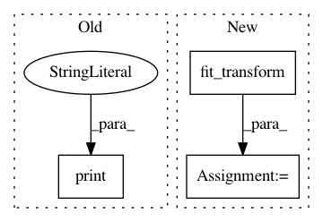

305fe8318688be276fefdaab125b1fb92ea62895,Python/phate/test.py,,test_tree,#,32
Before Change
// run phate with nonmetric MDS
phate_fast_operator.set_params(potential_method="sqrt")
print("DLA tree, fast metric MDS (sqrt)")
Y_sqrt_fast = phate_fast_operator.fit_transform(M)
assert Y_sqrt_fast.shape == (M.shape[0], 2)
return 0
After Change
K = phate_operator.graph.kernel
phate_operator.set_params(knn_dist="precomputed", random_state=42)
phate_precomputed_D = phate_operator.fit_transform(D)
phate_precomputed_K = phate_operator.fit_transform(K)
phate_operator.set_params(knn_dist="precomputed_distance")
phate_precomputed_distance = phate_operator.fit_transform(D)
In pattern: SUPERPATTERN
Frequency: 4
Non-data size: 3
Instances
Project Name: KrishnaswamyLab/PHATE
Commit Name: 305fe8318688be276fefdaab125b1fb92ea62895
Time: 2018-06-21
Author: scottgigante@gmail.com
File Name: Python/phate/test.py
Class Name:
Method Name: test_tree
Project Name: anttttti/Wordbatch
Commit Name: 7170cdf9c6ed8beacd93738b0ec1c97cfbc23b6e
Time: 2018-04-12
Author: antti.puurula@yahoo.com
File Name: wordbatch/wordbatch.py
Class Name: WordBatch
Method Name: process
Project Name: autoreject/autoreject
Commit Name: bd9ce4c5d582ab483dbf69eca5b73aa5e80f4738
Time: 2018-05-05
Author: denis.engemann@gmail.com
File Name: examples/plot_visualize_bad_epochs.py
Class Name:
Method Name:
Project Name: nilearn/nilearn
Commit Name: 8a94f10355b895ba8be0221bd7d22c50d1d887b7
Time: 2013-05-14
Author: philippe.gervais@inria.fr
File Name: plot_regions_covariance.py
Class Name:
Method Name: